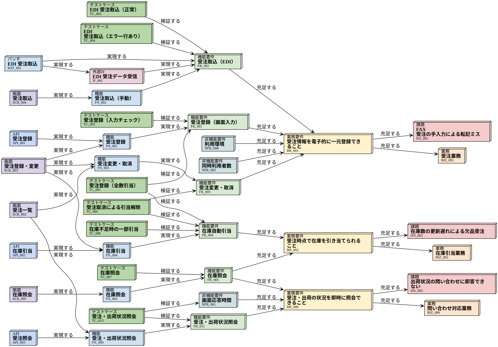
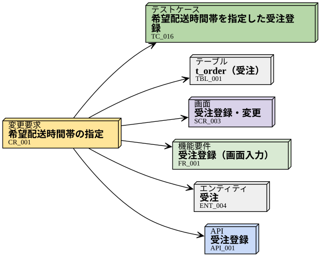
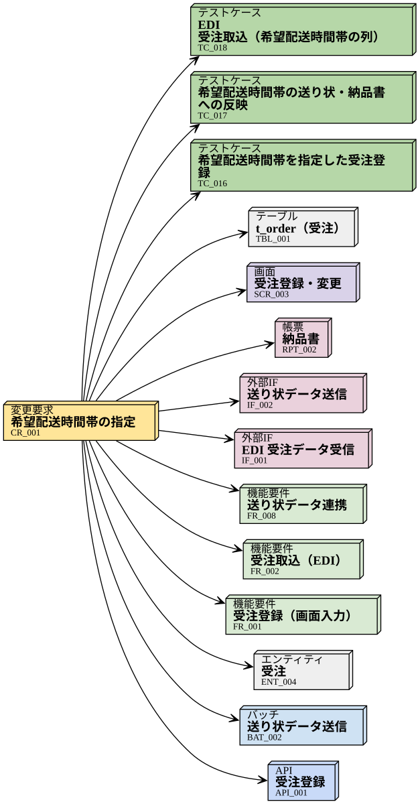
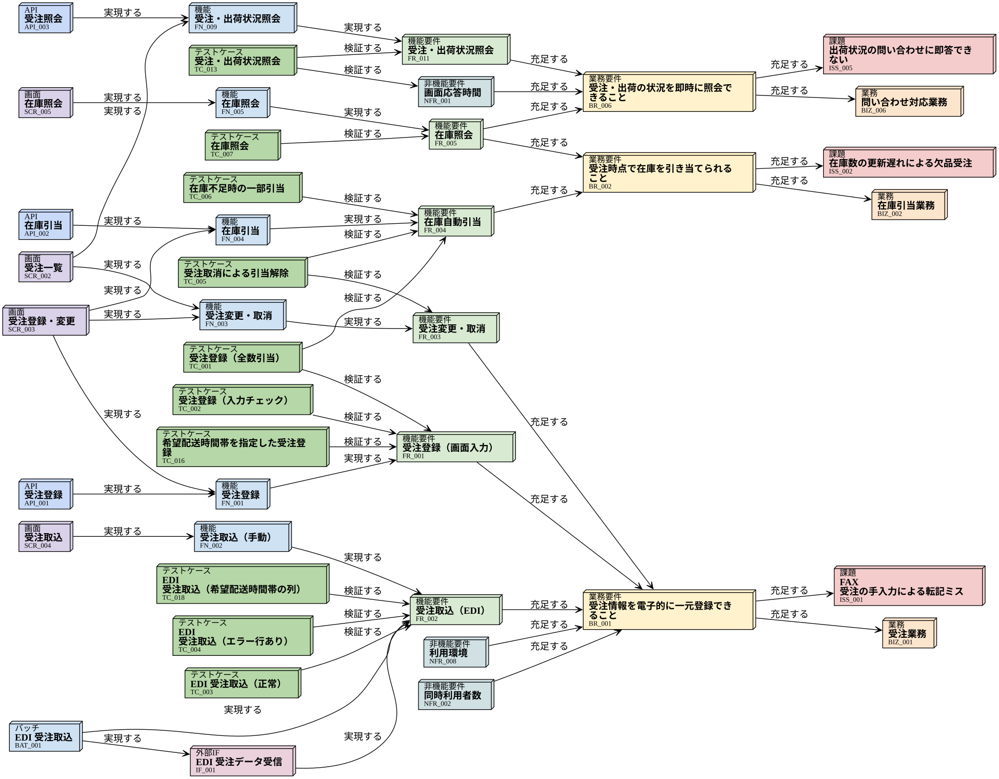

CR_001 対応ノート（新卒 田中）¶
書いた人 |
田中（2026 年度 新卒、開発チーム） |
対象 |
希望配送時間帯の指定 (CR_001) 希望配送時間帯の指定 |
PR |
初めての仕様変更対応の記録です。「どう調べて、どこを見落として、どう直したか」を、次に同じ作業をする人（と未来の自分）のために残します。
1. 依頼を受けた（11/10 09:30）¶
鈴木さんから「営業本部から仕様変更が来た。影響調査からやってみて」と言われた。
内容: 受注時に希望配送時間帯（午前 / 14-16 時 / 16-18 時 / 18-21 時）を選べるようにする。指定は任意。
第一印象: 「受注登録の画面に、選択欄を 1 個足すだけ」。
正直、半日で終わると思っていた。
2. 影響調査その 1: トレース図で FR_001 を起点にたどった（10:00）¶
ドキュメントの全体像と読む順番 で習ったとおり、 トレース図 の図 2（FR_001 を起点にした図）を見た。
変更前の図を残しておく（ scripts/snapshot_needflow.py で保存）。


スナップショット 1: 変更前の FR_001 まわりのトレース図¶
図には 41 個の need が出てきた。全部は見きれないので、FR_001 に直接つながっているもの（1 段）だけを拾った。
受注登録（画面入力） (FR_001) 受注登録（要件そのもの）
受注登録・変更 (SCR_003) 受注登録画面、 受注登録 (API_001) 受注登録 API
受注登録（全数引当） (TC_001) 、 受注登録（入力チェック） (TC_002) （既存のテスト。回帰確認に使う）
図には出てこないが、データを持つ場所も必要なので、 受注 (ENT_004) 受注と t_order（受注） (TBL_001) t_order を足した。 テストは 希望配送時間帯を指定した受注登録 (TC_016) を新しく作った。これで PR を出した。


スナップショット 2: 初版の PR 時点の変更範囲（6 件）¶
3. レビューで指摘された（13:30）¶
詳しいやり取りは PR-003: CR_001 受注に希望配送時間帯を追加 にある。要点は 3 つ。
EDI で入ってくる受注はどうするのか（鈴木さん）
時間帯を運送会社に渡さないと、指定した意味がない（鈴木さん）
納品書には印字するのか。テストは画面だけでよいのか（高橋さん）
どれも、言われてみれば当たり前だった。
4. なぜ見落としたのか¶
スナップショット 1 をもう一度見て、理由が 2 つあるとわかった。
理由 1: 図に写っていたのに読み飛ばした（EDI）
EDI 取込の 受注取込（EDI） (FR_002) 、 EDI 受注データ受信 (IF_001) 、 EDI 受注取込 (BAT_001) は、実はスナップショット 1 に写っていた。 FR_001 と同じ業務要件 受注情報を電子的に一元登録できること (BR_001) にぶら下がる「兄弟」の要件なので、上にたどってから下に戻る形で図に入ってくる。 でも 41 個の中で、「BR_001 の別の要件だから関係ない」と思って見なかった。 兄弟の要件が今回の変更に関係あるかどうかは、図の形ではなく「変更するデータ（受注）を使っているか」で決まる。
理由 2: そもそも図に出てこない（送り状・納品書）
送り状の 送り状データ連携 (FR_008) ・ 送り状データ送信 (IF_002) ・ 送り状データ送信 (BAT_002) と、納品書の 納品書 (RPT_002) は、スナップショット 1 のどこにもいない。 これらは出荷業務の要件（ 出荷指示を倉庫へ電子的に伝達できること (BR_003) ）の側にあり、FR_001 とは要件としてのつながりがない。つながっているのは「受注データ」だけ。
トレース図は、要件 → 設計 → テストの「縦」のつながりを表す。
データを介した「横」のつながりは、トレース図には出ない。それを表しているのが CRUD 図 だった。
CRUD 図の「受注（ENT_004）」の列を縦に見ると、こうなっていた（変更前の状態を手で写したもの）。
機能・バッチ |
CRUD |
時間帯の追加で影響するか |
|---|---|---|
FN_001 受注登録 |
C |
する（初版で対応済み） |
FN_002 受注取込（手動） / BAT_001 EDI 受注取込 |
C |
する（見落とし） 。EDI の CSV にも時間帯が必要（トレース図には写っていた） |
FN_003 受注変更・取消 |
U |
しない（今回は時間帯の変更は対象外。PR で確認済み） |
FN_004 在庫引当 |
R |
しない |
FN_006 出荷指示 |
R・U |
する（見落とし） 。納品書（RPT_002）に印字 |
FN_007 出荷実績登録 |
U |
しない |
FN_009 受注・出荷状況照会 |
R |
しない（API_003 は受注をそのまま返すので自動的に出る） |
BAT_002 送り状データ送信 |
（なし） |
する（見落とし） 。そもそも受注を読んでいなかった。R を追加 |
「C している機能が 1 つだけとは限らない」「データを外に出す機能（帳票・IF）は特に注意」が教訓。 BAT_002 は受注を参照していなかったので、CRUD 図にも印がなかった。これは「データの流れ」を業務フロー（ 業務フロー（As-Is / To-Be） の図 2）で追って気づくしかなかった。
5. 直した結果（16:00）¶
変更対象は 6 件から 14 件になった。


スナップショット 4: レビュー対応後の変更範囲（14 件）¶
FR_001 起点のトレース図は、TC_016 と TC_018（EDI のテスト）が増えただけで、ほとんど変わらない。 送り状と納品書は、対応後もこの図には出てこない。トレース図だけを見ていたら、何度やっても送り状には気づけなかった、ということ。


スナップショット 5: 変更後の FR_001 まわりのトレース図（スナップショット 1 と比べると TC_016 と TC_018 が増えただけ）¶
最新の状態は 変更要求一覧 で見られる（こちらはビルドのたびに描き直される）。
6. 次からの影響調査の手順（自分用チェックリスト）¶
変更する要件を起点に、トレース図で上下（要件 → 設計 → テスト）をたどる。
図に出てきた need は、直接つながっていなくても「変更するデータを使うか」で 1 つずつ仕分ける（兄弟の要件を読み飛ばさない）。
追加・変更するデータ項目が属するエンティティを決め、CRUD 図でその列を縦に見る。C・U している機能はすべて候補。
業務フロー図で、そのデータが「外に出ていく」ところ（帳票・外部 IF・バッチ）を探す。
外部 IF が変わる場合は、相手との合意が必要。自分で決めずに、未決事項に載せてもらう。
拾った need をすべて CR の
changesに書き、 変更要求一覧 の表と図で漏れがないかを眺める。テストは「入口（画面・EDI）」と「出口（帳票・送り状）」の両方を作る。
7. まだよくわかっていないこと（鈴木さんに聞く）¶
受注変更（FN_003）で時間帯を変えられないのは、今回のスコープ外という理解でよいか。営業事務から要望が来そう。
運送会社の時間帯区分コードの変換表は、どの資料に書くべきか（IF の定義？ 詳細設計？）。
スナップショットは手で保存したが、PR を出すたびに自動で残す仕組みがあると便利かもしれない。
🔰 新卒メモ: このノートの使い方
このノートは、新卒の田中さんが初めての仕様変更対応で書いた記録です。 影響調査は「トレース図（縦）」と「CRUD 図・業務フロー（横）」の両方を見る、というのが一番の学びです。 仕様変更を担当することになったら、6 章のチェックリストから始めてください。